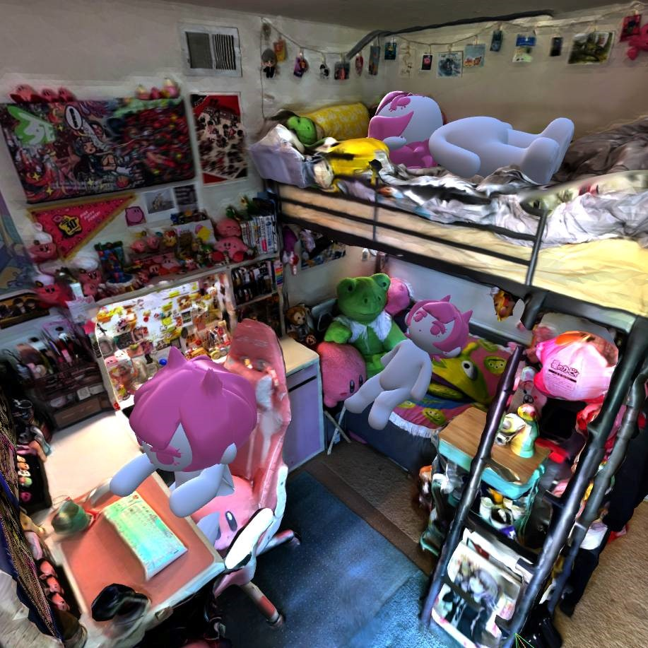
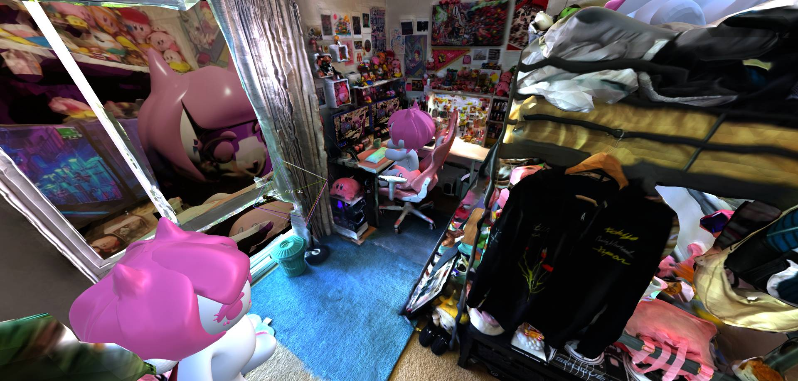
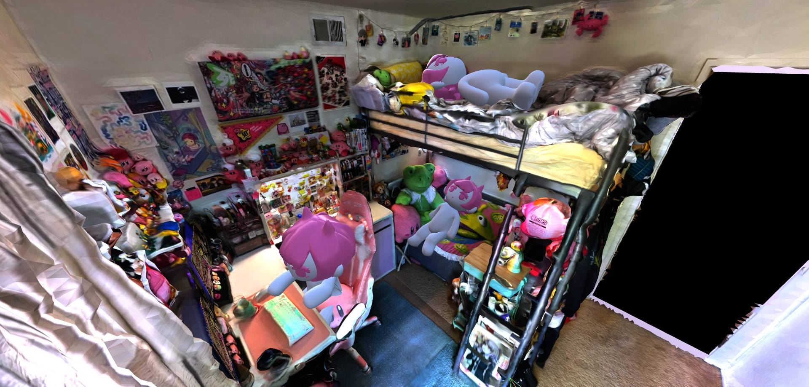
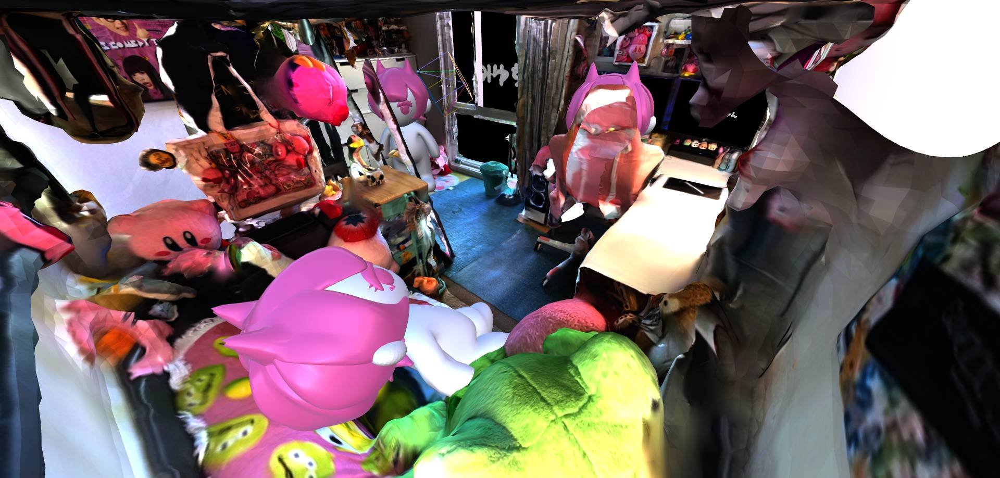
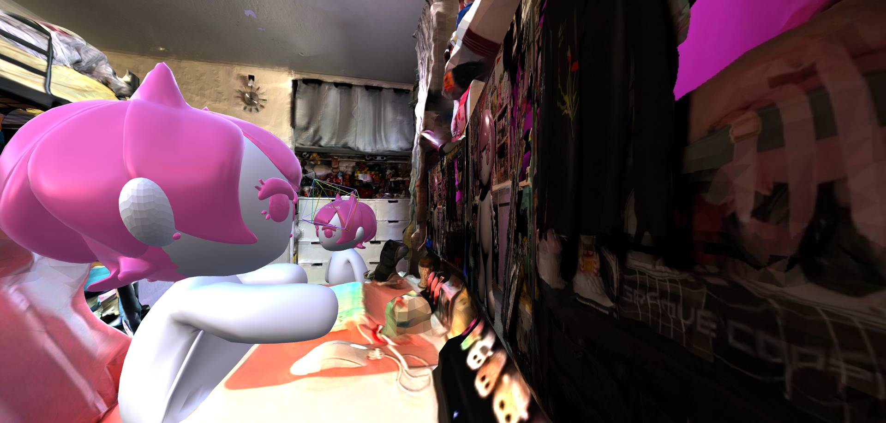
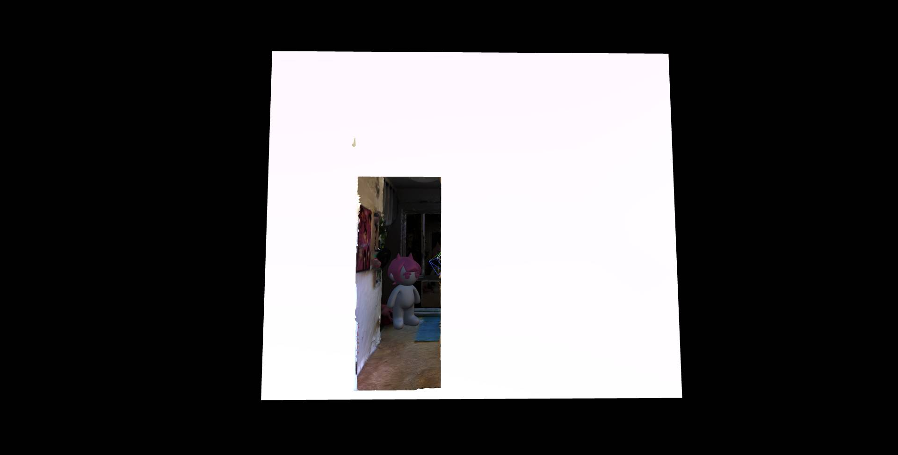
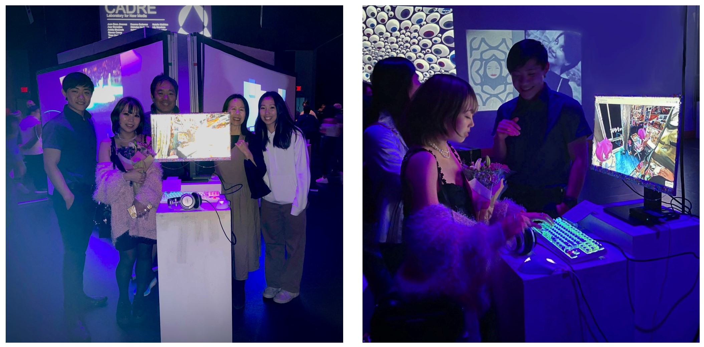
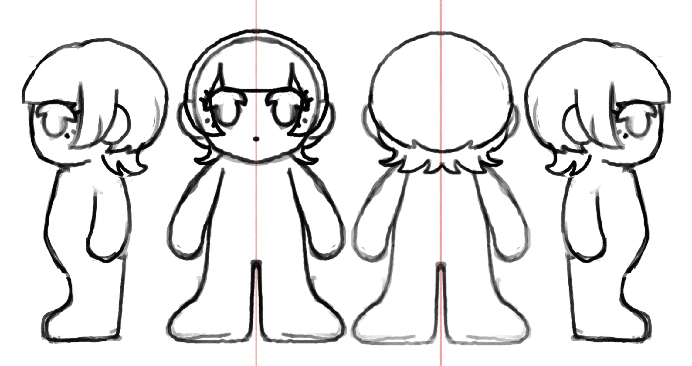
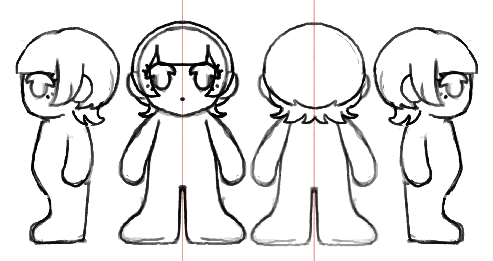

MIYU-CHAN
A video art self-portrait, using a photogrammetry scan of my tiny room. My room is my comfort place filled to the brim with all the things I love - yet sometimes I feel stuck here, like I’m not supposed to really belong here. People call me miyu, and other nicknames, but never miyu-chan. MIYU-CHAN is a deformed, impatient, and simplified self-portrait of myself, where everyday feels like the same; a neutral, uncanny feeling right in between feeling anxious and relaxed. A 40 Hz binaural beat is used for the main audio as the wavelength of 40 Hz is said to help the brain focus. The focus of MIYU-CHAN is the passage of uncertain time and uncertain progress.
- Made with After Effects, Blender, and Polycam -
Video
Trailer
New Art City Images
    Gallery Images
Reference Images


 
